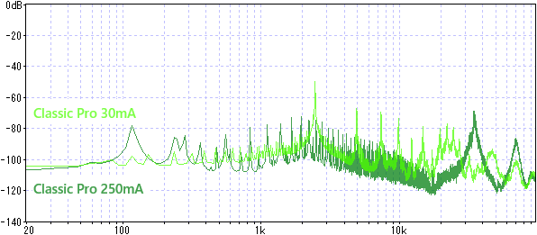
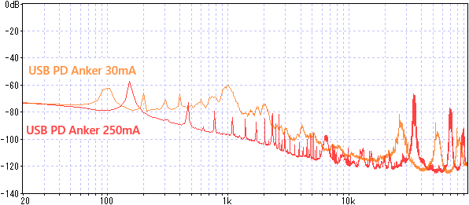
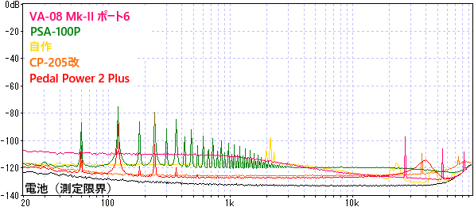
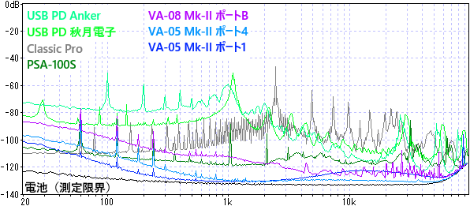

パワーサプライ ノイズ測定 まとめ
2024年08月12日 カテゴリー：修理・改造・解析
今まで、いろいろなエフェクター用電源のノイズ測定を行ってきました（タグ：パワーサプライ）。今回はそれぞれをあらためて測定し直し、結果をまとめました。
※EP Booster V2、Micro Amp、GT-1000COREとHX STOMPで調査した通り、電源ノイズが出音に影響しやすいかどうかはエフェクターによって違います。また、測定環境によって結果が変わり得るということをご留意ください。
＜使用したもの＞
・CLASSIC PRO 電源アダプター DC9V05ANS
・BOSS ACアダプター PSA-100S（旧型緑LED）
・BOSS ACアダプター PSA-100P（後期型中国製）
・自作パワーサプライ（スイッチングACアダプター LTE10UW-S2-BSA1→3端子レギュレータ NJM7809）
・Caline CP-205改
・Anker Charger (20W, 2-Port)
・秋月電子 スイッチングACアダプター(USB ACアダプター) PD20W Type-A/Type-C
・USB Type-C PDトリガーケーブル センターマイナス PDC-09VM
・VITAL AUDIO POWER CARRIER VA-05 Mk-II
・VITAL AUDIO POWER CARRIER VA-08 Mk-II
・VOODOO LAB Pedal Power 2 Plus 旧型（ジャンク修理品）
・GP GREEN CELL マンガン乾電池
・Golden Power アルカリ乾電池
・東芝 充電式IMPULSE ニッケル水素電池
【電圧測定】
| 無負荷 | 30mA | 250mA | |
| CLASSIC PRO | 9.17 | 9.16 | 9.09 |
| PSA-100S | 9.32 | 9.29 | 9.08 |
| PSA-100P | 8.92 | 8.91 | - |
| 自作 | 8.98 | 8.97 | 8.93 |
| VA-05 Mk-II 1 | 9.23 | 9.16 | 8.88 |
| VA-05 Mk-II 4 | 9.34 | 9.27 | 9.04 |
| VA-08 Mk-II A | 9.33 | 9.21 | 9.08 |
| VA-08 Mk-II 6 | 9.28 | 9.26 | 9.15 |
| PD Anker | 8.99 | 8.98 | 8.97 |
| PD 秋月電子 | 9.17 | 9.16 | 9.13 |
| PedalPower2+ | 9.33 | 9.29 | - |
| GPマンガン | 10.02 | 9.40 | 7.45 |
| GoldenPower | 9.83 | 9.71 | 9.07 |
| 充電式IMPULSE | 9.83 | 9.67 | 8.67 |
【電流による影響】
VA-05 Mk-IIやVA-08 Mk-IIで測定した通り、電流が増えるとノイズが増加します。スイッチングACアダプターでは、電流が増えるとノイズの周波数が高くなり、可聴域のノイズが少なくなる場合があります。

【ノイズ測定】
以前と同様オーディオインターフェイスに接続して測定しています。出力電流は全て30mAです。低音域の分解能を上げるため、FFTのサンプル数を今までの16384から131072へ増やしました。その影響で全体のレベルが下がったため、+9dBの補正をしてあります。また、見やすくするためピークのみ描画としてあります。
リニアレギュレータが使われているものを下図にまとめました。

スイッチング電源ではないPSA-100PやPedal Power 2 Plusでは、商用電源のノイズ（60Hzの倍数）が乗りやすいようです。図には示していませんが、電流増加時にノイズが増えにくい特徴があります。
上記以外のものをまとめました。

各ACアダプターはノイズが多めですが、PSA-100Sは低電流時に低ノイズになっています。VA-05やVA-08はトランジスタのリップルフィルタがあるため、高音域側の方がノイズを抑えられています。全体的なリップル除去としてはリニアレギュレーターの方が優れているかと思います。
GitHubに高解像度版の透過PNG画像をアップロードしてあります。細かく見比べたい方は、そちらをご参照ください。全画像をまとめたファイルALL.pdnは、フリーソフトPaint.NETで開くことができます。